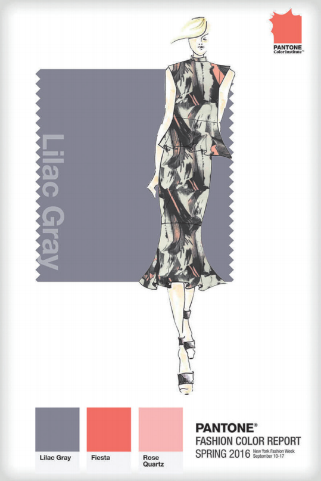

Capa do Fashion Color Report - Spring 2016, elaborado pelo Pantone Color Institute.
Disponível em: http://holtermann.design/rose-quartz-serenityfashion-accessories/023-lilac-gray-pantone-fashion-color-report2016-spring-summer/. Acesso em: 8 set. 2018.
A partir da análise da imagem apresentada, avalie
as afirmações a seguir.
-
As três cores apresentadas na imagem são
consideradas cor-luz.
-
Entre as três cores apresentadas, existem
duas que são complementares.
-
O cinza Lilac Gray, considerado neutro,
possui baixa saturação.
-
A cor denominada Rose Quartz pode
ser criada a partir da mistura das cores-pigmento primárias magenta e amarelo,
além da adição de branco na composição.
É correto apenas o que se afirma em
-
I e IV.
-
II e III.
-
III e IV.
-
I, II e III.
-
I, II e IV.